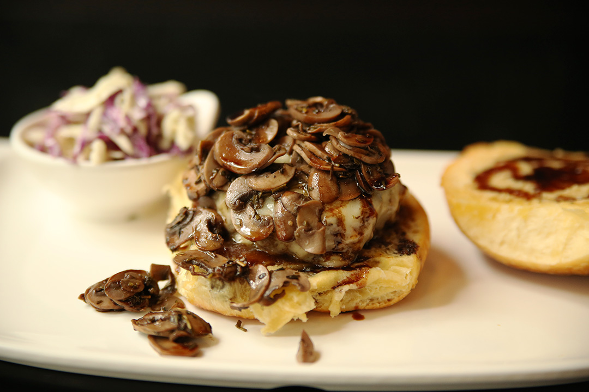
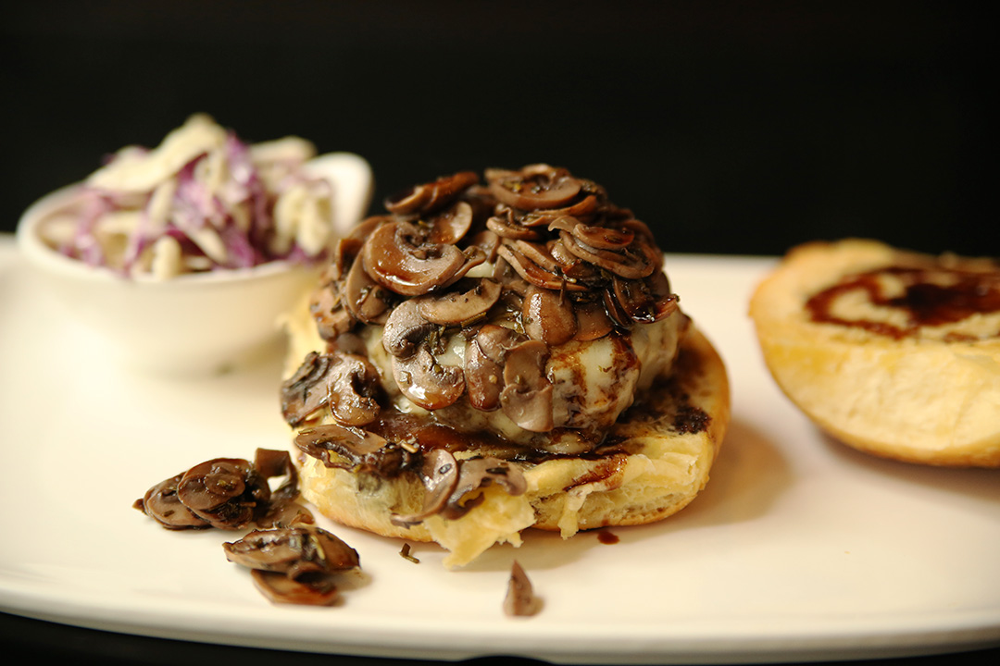
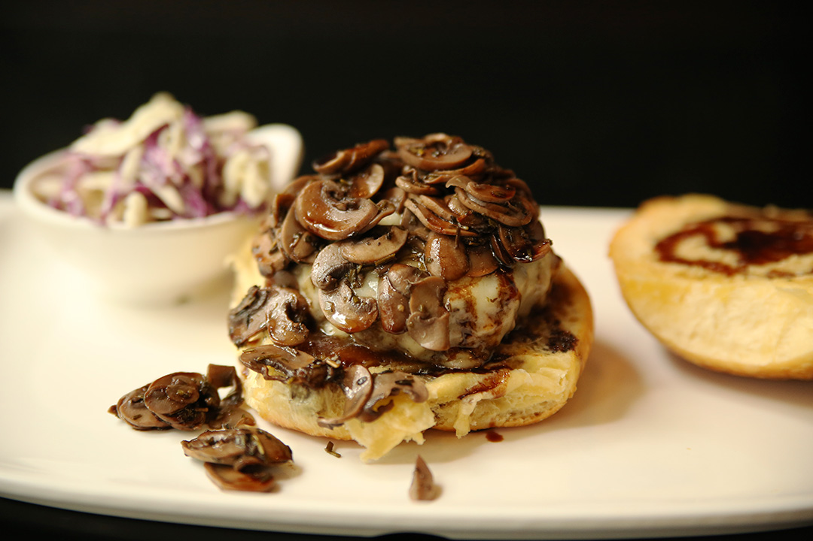

| Sections |
|---|
| Personal |
| Country Info |
| Photos |
Chengdu was probably the most culturally unique place that I lived. It was the only place there was a true language barrier and I enjoyed learning the phrases that I did. The food was absolutely amazing! Not just the chinese either I acutally had the best burgers of my life at a joint called Red Beards. It was owned by an expat couple who moved there from ohio and Ive never had anything better. China was the first year that I planned and executed the Marine Corps Ball for my detachment and I went on to do that the next year in Rome as well.
China, officially the People's Republic of China (PRC), is a unitary sovereign state in East Asia and the world's most populous country, with a population of around 1.404 billion. Covering approximately 9,600,000 square kilometers (3,700,000 sq mi), it is the third- or fourth-largest country by total area, depending on the source consulted. China also has the most neighbor countries in the world. Governed by the Communist Party of China, it exercises jurisdiction over 22 provinces, five autonomous regions, four direct-controlled municipalities (Beijing, Tianjin, Shanghai, and Chongqing), and the special administrative regions of Hong Kong and Macau. China emerged as one of the world's earliest civilizations, in the fertile basin of the Yellow River in the North China Plain. For millennia, China's political system was based on hereditary monarchies, or dynasties, beginning with the semi-legendary Xia dynasty in 21st century BCE. Since then, China has expanded, fractured, and re-unified numerous times. In the 3rd century BCE, the Qin unified core China and established the first Chinese dynasty. The succeeding Han dynasty saw some of the most advanced technology at that time, including papermaking and the compass, along with agricultural and medical improvements. The invention of gunpowder and printing in the Tang dynasty completed the Four Great Inventions. Tang culture spread widely in Asia, as the new maritime Silk Route brought traders to as far as Mesopotamia and Somalia. Dynastic rule ended in 1912 with the Xinhai Revolution, as a republic replaced the Qing dynasty. The Chinese Civil War led to the break up of the country in 1949, with the victorious Communist Party of China founding the People’s Republic of China on the mainland while the losing Kuomintang retreated to Taiwan, a dispute which is still unresolved. Since the introduction of economic reforms in 1978, China's economy has been one of the world's fastest-growing. As of 2016, it is the world's second-largest economy by nominal GDP and largest by purchasing power parity (PPP). China is also the world's largest exporter and second-largest importer of goods. China is a recognized nuclear weapons state and has the world's largest standing army and second-largest defense budget. The PRC is a member of the United Nations, as it replaced the ROC as a permanent member of the UN Security Council in 1971. China is also a member of numerous formal and informal multilateral organizations, including the WTO, APEC, BRICS, the Shanghai Cooperation Organization (SCO), the BCIM and the G20. China is a great power and a major regional power within Asia, and has been characterized as a potential superpower. Source Wikipedia
